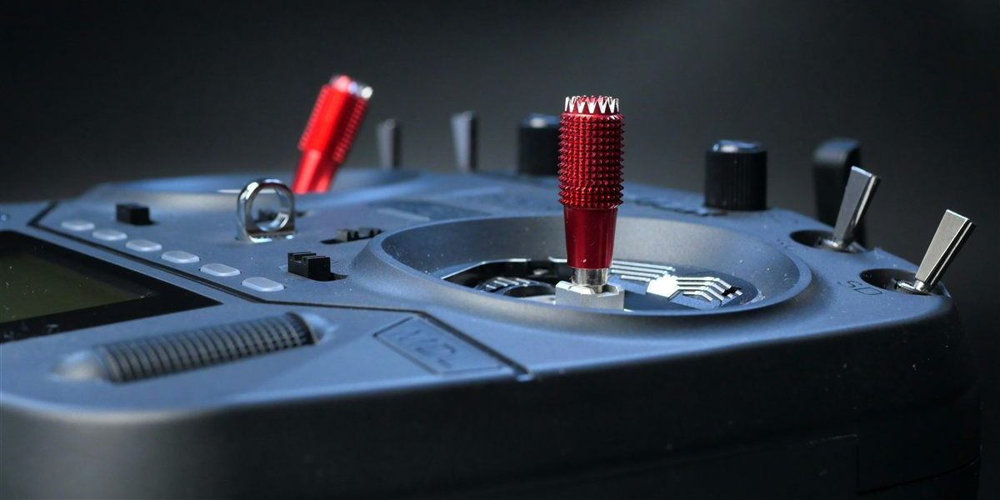

Tarvittavat laitteet
Tähän tulee myöhemmin esittely FPV-lentämiseen tarvittavista laitteista kuvineen.
Miten FPV toimii
Tähän tulee myöhemmin kuvaus siitä, miten kuva kulkee kamerasta lähettimen kautta laseihin.
Analoginen vs. digitaalinen
Tähän tulee myöhemmin vertailu analogisen ja digitaalisen videosignaalin eroista.